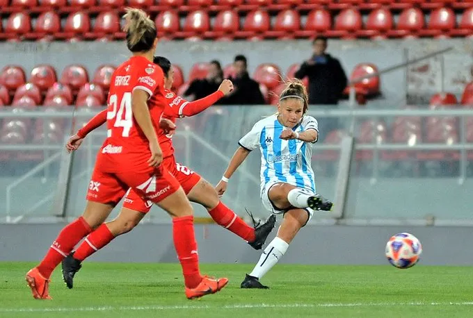

Las Diablas reciben a la líder del Apertura el jueves 9 de julio a las 15:00 hs en el Predio Villa Domínico. Racing llega co-líder con 29 puntos y necesita ganar para mantener la ventaja en la diferencia de gol sobre San Lorenzo. Se puede ver en vivo por LPF Play.

 Independiente
Independiente
 Racing
Racing
El fútbol femenino argentino tiene clásico de Avellaneda esta semana. Independiente recibe a Racing Club este jueves 9 de julio a las 15:00 hs en el Predio Villa Domínico, por la Fecha 13 del Apertura Femenino. El partido se puede ver en vivo por LPF Play y las entradas tienen un valor de $10.000, con estacionamiento a $7.000.
Racing es co-líder del torneo con 29 puntos en 12 partidos, junto a San Lorenzo. La Academia viene de golear 2-0 a Huracán en la fecha anterior y acumula nueve victorias en el certamen, con una diferencia de gol de +21, la mejor del campeonato. Con San Lorenzo también en 29 puntos pero con +20, cualquier tropiezo de Racing en este clásico puede costarle la punta.
Independiente llega en una posición muy distinta. Las Diablas suman apenas 10 puntos en 12 partidos y vienen de perder 2-0 ante San Lorenzo en la fecha anterior. El clásico es una oportunidad para sumar puntos clave en la lucha por salir de la zona baja de la tabla y, de paso, complicar a la líder del torneo.
Para Racing, ganar este partido sería dar un paso importante hacia el título. Para Independiente, la motivación es doble: sumar puntos y hacerlo ante la rival de barrio. El Clásico de Avellaneda siempre tiene una carga especial, y que se juegue con Racing peleando la punta del Apertura le agrega otro condimento a un partido que ya de por sí genera expectativa en la zona.
Seguir leyendo